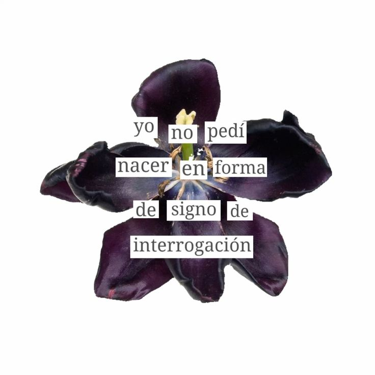

La transformación de la materia, el amor |
Ruta Temática Pablo Neruda |
Puedo escribir los versos más tristes esta noche.
Escribir, por ejemplo: 'La noche está estrellada,
y tiritan, azules, los astros, a lo lejos.

El mediodía, verano,
se parte en dos mitades:
en dos mitades rojas,
el tomate se desangra.
Sube a nacer conmigo, hermano.
Dame la mano desde la profunda zona
de tu dolor diseminado.
No volverás del fondo de las rocas,
no volverás del tiempo subterráneo.